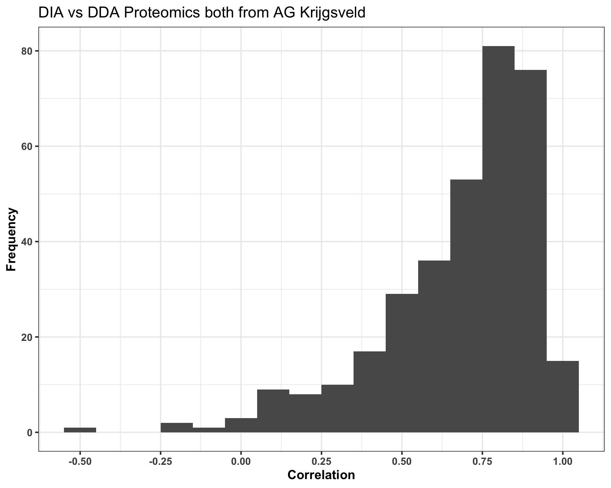
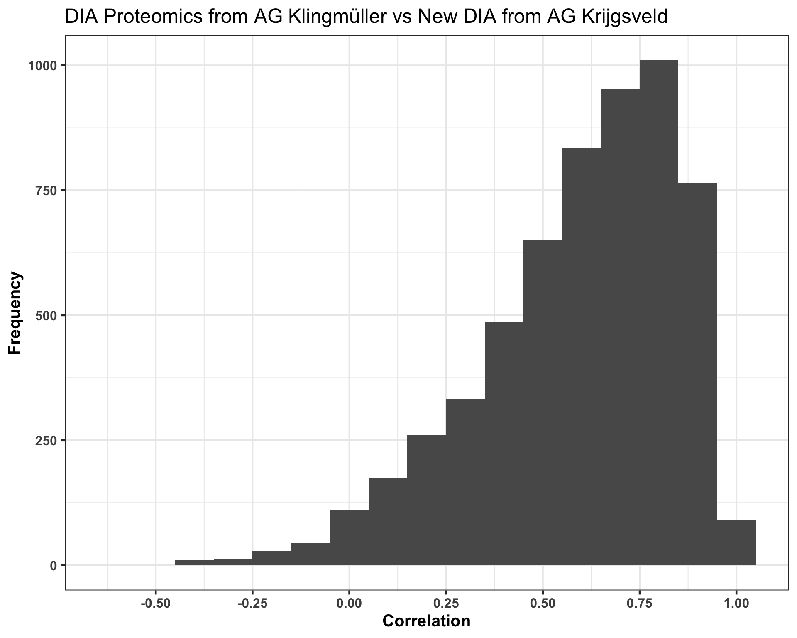
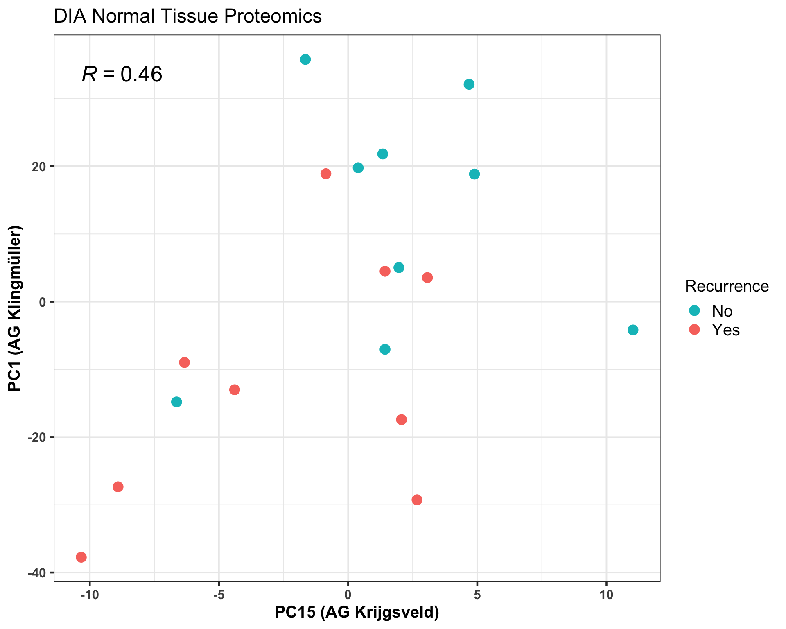
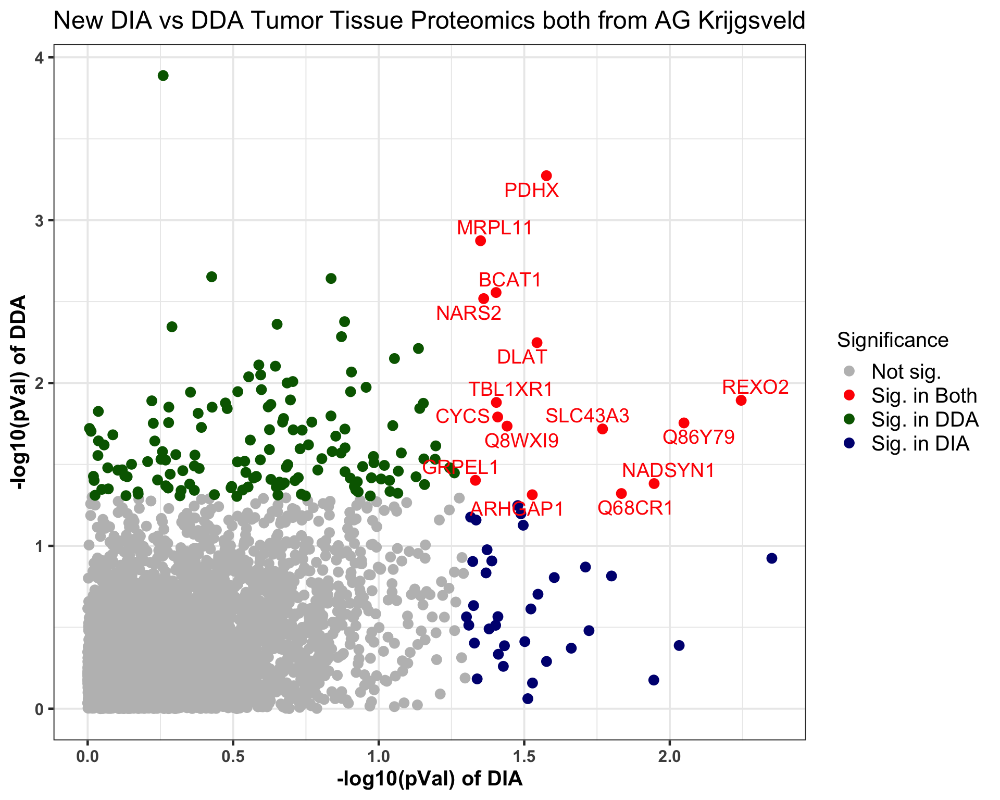

Comparisons between DIA and DDA proteomics datasets
Qian-Wu Liao
Last updated: 2023-08-22
Checks: 6 1
Knit directory:
SMART-CARE_LungCancer_MethodDev/
This reproducible R Markdown analysis was created with workflowr (version 1.7.0). The Checks tab describes the reproducibility checks that were applied when the results were created. The Past versions tab lists the development history.
Great! Since the R Markdown file has been committed to the Git repository, you know the exact version of the code that produced these results.
Great job! The global environment was empty. Objects defined in the global environment can affect the analysis in your R Markdown file in unknown ways. For reproduciblity it’s best to always run the code in an empty environment.
The command set.seed(20230425) was run prior to running
the code in the R Markdown file. Setting a seed ensures that any results
that rely on randomness, e.g. subsampling or permutations, are
reproducible.
Great job! Recording the operating system, R version, and package versions is critical for reproducibility.
Nice! There were no cached chunks for this analysis, so you can be confident that you successfully produced the results during this run.
Using absolute paths to the files within your workflowr project makes it difficult for you and others to run your code on a different machine. Change the absolute path(s) below to the suggested relative path(s) to make your code more reproducible.
| absolute | relative |
|---|---|
| /Users/qianwu/Desktop/SMART-CARE_LungCancer_MethodDev | . |
Great! You are using Git for version control. Tracking code development and connecting the code version to the results is critical for reproducibility.
The results in this page were generated with repository version 717cb23. See the Past versions tab to see a history of the changes made to the R Markdown and HTML files.
Note that you need to be careful to ensure that all relevant files for
the analysis have been committed to Git prior to generating the results
(you can use wflow_publish or
wflow_git_commit). workflowr only checks the R Markdown
file, but you know if there are other scripts or data files that it
depends on. Below is the status of the Git repository when the results
were generated:
Ignored files:
Ignored: .DS_Store
Ignored: .RData
Ignored: .Rhistory
Ignored: analysis/.DS_Store
Ignored: code/.DS_Store
Ignored: data/.DS_Store
Ignored: output/.DS_Store
Untracked files:
Untracked: analysis/feature_selection.Rmd
Untracked: analysis/mofa_downstream_analysis.Rmd
Untracked: code/Junyan/
Untracked: code/about.Rmd
Untracked: code/dataset_list.R
Untracked: code/feature_selection_old.Rmd
Untracked: code/license.Rmd
Untracked: code/mofa_downstream_analysis.Rmd
Untracked: code/mofa_factors_investigation.Rmd
Untracked: code/mofa_varied_omics_combinations.Rmd
Untracked: code/workflowr_commands.R
Untracked: data/AG_Hell/
Untracked: data/AG_Hopf/
Untracked: data/AG_Klingmuller/
Untracked: data/AG_Krijgsveld/
Untracked: data/MethodDev_LungCancer_Datasets.RData
Untracked: data/mofa/
Untracked: data/patient_metadata.tsv
Untracked: data/rf/
Untracked: data/stats/
Untracked: output/TAC_2023/
Untracked: output/YIG_seminar/
Untracked: output/preliminary_analysis_untargeted.html
Unstaged changes:
Deleted: analysis/mofa_varied_omics_combinations.Rmd
Note that any generated files, e.g. HTML, png, CSS, etc., are not included in this status report because it is ok for generated content to have uncommitted changes.
These are the previous versions of the repository in which changes were
made to the R Markdown (analysis/comparisons_DIA_DDA.Rmd)
and HTML (docs/comparisons_DIA_DDA.html) files. If you’ve
configured a remote Git repository (see ?wflow_git_remote),
click on the hyperlinks in the table below to view the files as they
were in that past version.
| File | Version | Author | Date | Message |
|---|---|---|---|---|
| Rmd | 9a0840b | LiaoQianWu | 2023-08-04 | Redo feature filtering for DIA proteomics and rerun subsequent analyses |
| Rmd | 83a849a | LiaoQianWu | 2023-07-31 | Do single-omics analysis of new DIA plasma and tissue proteomics from AG Krijgsveld and compare it with other proteomics we have |
| html | 128dd12 | LiaoQianWu | 2023-07-14 | Build site. |
| Rmd | 4d5db4a | LiaoQianWu | 2023-07-14 | Reanalyze filtered untargeted metabolomics and lipidomics with PPCA and additional patient metadata |
| html | 389d24e | LiaoQianWu | 2023-06-28 | Build site. |
| Rmd | b083640 | LiaoQianWu | 2023-06-27 | Preprocess DIA tissue proteomics from AG Klingmüller and compare it with DIA and DDA data from AG Krijgsveld |
| html | 5c9ec0b | LiaoQianWu | 2023-06-07 | Build site. |
| Rmd | 7cee36e | LiaoQianWu | 2023-06-07 | Compute correlations of common features between DIA and DDA Proteomics |
Description: Compare DIA and DDA Plasma and Tissue
Proteomics generated by AG Krijgsveld. Basically, correlations of common
features between DIA and DDA Proteomics were computed to see data
reproducibility using different data acquisition methods.
Update: Compare DIA Tissue Proteomics generated by AG Klingmüller
with aforementioned DIA and DDA Tissue Proteomics from AG Krijgsveld. In
addition, significant cancer recurrence-related proteins from each
dataset are also summarized.
Update: Compare New DIA Plasma and Tissue Proteomics from AG Krijgsveld with all aforementioned datasets. Old DIA Tissue Proteomics from AG Krijgsveld may have something wrong (bad data quality)!
Load libraries
library(SummarizedExperiment)
library(ggrepel)
library(igraph)
library(ggraph)
library(tidyverse)
# Load user-defined functions
source('./code/misc.R')
# Set plot theme
th <- theme_bw(base_size = 15) +
theme(axis.title = element_text(face = 'bold'),
axis.text = element_text(face = 'bold'),
axis.ticks = element_line(linewidth = 0.8),
legend.text = element_text(size = 15))calcFeatCorr <- function(data1, data2, show_nFeats = F) {
#' Systematically compute feature correlations between two PROTEOMICS (for now) datasets
#'
#' Parameters
#' data1, data2: SummarizedExperiment objects that contain data matrices
#'
#' Return
#' corrRes: A table of correlations of overlapped features between two datasets
# Extract data matrix
dat1 <- SummarizedExperiment::assay(data1)
dat2 <- SummarizedExperiment::assay(data2)
# Make two matrices share same sample and feature spaces and in same row and column order
# Keep only common samples
commonSmps <- intersect(colnames(dat1), colnames(dat2))
dat1 <- dat1[, commonSmps]
dat2 <- dat2[, commonSmps]
# Keep only common features
# Select first protein as representative if there are more than one
rownames(dat1) <- stringr::str_remove(rownames(dat1), ';.*')
rownames(dat2) <- stringr::str_remove(rownames(dat2), ';.*')
commonFeats <- intersect(rownames(dat1), rownames(dat2))
dat1 <- dat1[commonFeats,]
dat2 <- dat2[commonFeats,]
if (show_nFeats) {
cat('Features in data1: ', nrow(data1), '\n', 'Features in data2: ', nrow(data2), '\n',
'Features in common: ', length(commonFeats), sep = '')
}
# Compute feature correlations between two proteomics datasets
# Do sanity check
if (identical(rownames(dat1), rownames(dat2)) &
identical(colnames(dat1), colnames(dat2))) {
corrs <- sapply(seq_len(nrow(dat1)), function(i) {
corr <- cor.test(dat1[i,], dat2[i,], method = 'pearson', use = "pairwise.complete.obs")
corr$estimate
})
corrRes <- data.frame(Feature = rownames(dat1), Correlation = corrs) %>%
dplyr::arrange(Correlation)
}
return(corrRes)
}
doFeatAssoTest <- function(data, condition) {
#' Conduct univariate association test between each feature and CANCER RECURRENCE (for now)
#'
#' Parameters
#' data: A SummarizedExperiment object that contains the data matrix and metadata
#' condition: A character specifying the sample metadata to split the dataset
#'
#' Return
#' assoTestRes: A table of feature significance test results
# Subset samples
subsetIdx <- which(colData(data)$Condition == condition)
datSub <- data[, subsetIdx]
datMat <- SummarizedExperiment::assay(datSub)
if (all(complete.cases(datMat))) {
# Perform analysis
soaRes <- doSOA(datSub, meta_var = 'Recurrence')
assoTestRes <- soaRes$tFeatRes %>%
dplyr::select(Var1, pVal) %>%
dplyr::rename(Feature = Var1)
} else {
smpAnno <- tibble::as_tibble(colData(datSub), rownames = 'Sample')
# Perform analysis
# Fit linear probabilistic dropout model to normalized data
fit <- proDA::proDA(datMat, design = ~ smpAnno$Recurrence)
assoTestRes <- proDA::test_diff(fit,
contrast = Intercept + `smpAnno$RecurrenceYes` - Intercept,
sort_by = 'pval') %>%
dplyr::select(name, pval) %>%
dplyr::rename(Feature = name, pVal = pval)
}
return(assoTestRes)
}
combineFeatAsso <- function(data1, data2, name1, name2, condition, prot_gene_tbl, alpha = 0.05) {
#' Conduct univariate association tests between features and CANCER RECURRENCE (for now)
#' and combine and tidy up results and information into a table for making plots
#'
#' Parameters
#' data1, data2: SummarizedExperiment objects that contain the data matrices and metadata
#' name1, name2: Characters indicating the dataset names in the plot legend
#' condition: A character specifying the sample metadata to split the dataset
#' prot_gene_tbl: A table containing proteins and their encoding genes for plot
#' labeling. The column for proteins should be named 'Proteins' and for genes
#' should be named 'Genes'. Furthermore, only the first protein and gene should
#' be kept if there are more than one
#' #' alpha: A numeric value specifying the significance level for hypothesis testing
#'
#' Return:
#' combinedAssoTestRes: A table containing association test results, labeling
#' information, etc. for making plots
# Extract common features between two datasets
# Select first protein as representative if there are more than one
commonFeats <- intersect(stringr::str_remove(rownames(data1), ';.*'),
stringr::str_remove(rownames(data2), ';.*'))
# Compute associations between features and cancer recurrence and tidy up association test results
assoTestRes_dat1 <- doFeatAssoTest(data1, condition = condition) %>%
dplyr::mutate(Feature = stringr::str_remove(Feature, ';.*'),
Sig_dat1 = dplyr::case_when(pVal <= alpha ~ 'Yes',
pVal > alpha ~ 'No')) %>%
dplyr::filter(Feature %in% commonFeats) %>%
dplyr::rename(pVal_dat1 = pVal)
assoTestRes_dat2 <- doFeatAssoTest(data2, condition = condition) %>%
dplyr::mutate(Feature = stringr::str_remove(Feature, ';.*'),
Sig_dat2 = dplyr::case_when(pVal <= alpha ~ 'Yes',
pVal > alpha ~ 'No')) %>%
dplyr::filter(Feature %in% commonFeats) %>%
dplyr::rename(pVal_dat2 = pVal)
# Combine association test results into a table and prepare color and label information
combinedAssoTestRes <- dplyr::left_join(assoTestRes_dat1, assoTestRes_dat2, by = 'Feature') %>%
dplyr::mutate(Significance = dplyr::case_when(Sig_dat1 == 'Yes' & Sig_dat2 == 'Yes' ~ 'Sig. in Both',
Sig_dat1 == 'Yes' & Sig_dat2 == 'No' ~ paste('Sig. in', name1),
Sig_dat1 == 'No' & Sig_dat2 == 'Yes' ~ paste('Sig. in', name2),
Sig_dat1 == 'No' & Sig_dat2 == 'No' ~ 'Not sig.'),
Gene = plyr::mapvalues(Feature,
from = prot_gene_tbl$Proteins,
to = prot_gene_tbl$Genes,
warn_missing = F),
Label = dplyr::case_when(Significance == 'Sig. in Both' ~ Gene))
# Reorder points in graph
significance <- combinedAssoTestRes$Significance
combinedAssoTestRes <- combinedAssoTestRes[c(which(significance == 'Not sig.'),
which(significance == 'Sig. in Both'),
which(significance == paste('Sig. in', name1)),
which(significance == paste('Sig. in', name2))),]
return(combinedAssoTestRes)
}
findOverlapSigFeats <- function(DIA_data1, DIA_data2, DDA_data = NULL, condition,
prot_gene_tbl, alpha = 0.05) {
#' Extract overlaps of significant features across datasets
#'
#' Parameters
#' DIA_data1, DIA_data2: SummarizedExperiment objects that contain the data matrices and metadata
#' DDA_data: An SE object containing the data matrix and metadata, which is used
#' as an extra layer of evidence to support found significant features. Defualt is NULL
#' condition: A character specifying the sample metadata to split the dataset
#' prot_gene_tbl: A table containing proteins and their encoding genes for plot
#' labeling. The column for proteins should be named 'Proteins' and for genes
#' should be named 'Genes'. Furthermore, only the first protein and gene should
#' be kept if there are more than one
#' alpha: A numeric value specifying the significance level for hypothesis testing
#'
#' Return
#' A list containing the following components:
#' overlapFeatTab: A table containing summarized results of significance tests
#' across datasets. The columns of 'pVal1' and 'pVal2' hold feature significance
#' from input data1 and data2. Score is the product of -log10(pVal1) and -log10(pVal2)
#' sigFeatTab1, sigFeatTab2: Summarized information of common significant features
#' and needed sample and feature metadata
# Extract common features between two datasets
# Select first protein as representative if there are more than one
cmnFeats<- intersect(stringr::str_remove(rownames(DIA_data1), ';.*'),
stringr::str_remove(rownames(DIA_data2), ';.*'))
# Do association test between each feature and cancer recurrence and organize
# significant features from each dataset
sigFeats1_DIA <- doFeatAssoTest(DIA_data1, condition = condition) %>%
dplyr::mutate(Feature = stringr::str_remove(Feature, ';.*'),
Occurrence = dplyr::case_when(pVal <= alpha ~ 1,
pVal > alpha ~ 0)) %>%
dplyr::filter(Feature %in% cmnFeats)
sigFeats2_DIA <- doFeatAssoTest(DIA_data2, condition = condition) %>%
dplyr::mutate(Feature = stringr::str_remove(Feature, ';.*'),
Occurrence = dplyr::case_when(pVal <= alpha ~ 1,
pVal > alpha ~ 0)) %>%
dplyr::filter(Feature %in% cmnFeats)
# Summarize all information and pinpoint most promising recurrence-related features
summSigFeats <- dplyr::left_join(sigFeats1_DIA, sigFeats2_DIA, by = 'Feature') %>%
dplyr::mutate(Occurrence = Occurrence.x + Occurrence.y) %>%
dplyr::filter(Occurrence == 2) %>%
# dplyr::mutate(Score = ((-log10(pVal.x))+(-log10(pVal.y)))/2) %>%
dplyr::mutate(Score = (-log10(pVal.x) * -log10(pVal.y))) %>%
dplyr::arrange(dplyr::desc(Score)) %>%
dplyr::mutate(Gene = plyr::mapvalues(Feature,
from = prot_gene_tbl$Proteins,
to = prot_gene_tbl$Genes,
warn_missing = F),
Gene = factor(Gene, levels = Gene)) %>%
dplyr::rename(Protein = Feature, pVal1 = pVal.x, pVal2 = pVal.y) %>%
dplyr::select(-c(Occurrence, Occurrence.x, Occurrence.y))
# Add extra layer of evidence if provided
if (!is.null(DDA_data)) {
sigFeats_DDA <- doFeatAssoTest(DDA_data, condition = condition) %>%
dplyr::filter(pVal <= alpha) %>%
dplyr::mutate(Feature = stringr::str_remove(Feature, ';.*')) %>%
dplyr::pull(Feature)
summSigFeats <- dplyr::mutate(summSigFeats,
inDDA = dplyr::case_when(Protein %in% sigFeats_DDA ~ 'Yes',
!(Protein %in% sigFeats_DDA) ~ 'No'))
}
# Retrieve abundances of overlapped significant features from each dataset and
# combine all needed sample and feature information into a table
# Prepare patient recurrence information
recurInfo <- tibble::as_tibble(colData(DDA_data), rownames = 'Sample') %>%
dplyr::select(Sample, Recurrence)
# Tidy up all needed information
DIA_dataSub1 <- DIA_data1[, which(colData(DIA_data1)$Condition == condition)]
rownames(DIA_dataSub1) <- stringr::str_remove(rownames(DIA_dataSub1), ';.*')
sigFeats1 <- t(SummarizedExperiment::assay(DIA_dataSub1)) %>%
tibble::as_tibble(rownames = 'Sample') %>%
dplyr::select(c(Sample, summSigFeats$Protein)) %>%
tidyr::pivot_longer(cols = -'Sample', names_to = 'Protein', values_to = 'Abundance') %>%
dplyr::left_join(summSigFeats[, c('Protein', 'Gene', 'pVal1', 'inDDA')], by = 'Protein') %>%
dplyr::left_join(recurInfo, by = 'Sample') %>%
dplyr::mutate(Gene = paste0(Gene, '\n(p = ', round(pVal1, 4), ')'),
Gene = dplyr::case_when(inDDA == 'Yes' ~ paste0('*', Gene),
inDDA == 'No' ~ Gene),
Gene = factor(Gene, levels = unique(Gene)))
DIA_dataSub2 <- DIA_data2[, which(colData(DIA_data2)$Condition == condition)]
rownames(DIA_dataSub2) <- stringr::str_remove(rownames(DIA_dataSub2), ';.*')
sigFeats2 <- t(SummarizedExperiment::assay(DIA_dataSub2)) %>%
tibble::as_tibble(rownames = 'Sample') %>%
dplyr::select(c(Sample, summSigFeats$Protein)) %>%
tidyr::pivot_longer(cols = -'Sample', names_to = 'Protein', values_to = 'Abundance') %>%
dplyr::left_join(summSigFeats[, c('Protein', 'Gene', 'pVal2', 'inDDA')], by = 'Protein') %>%
dplyr::left_join(recurInfo, by = 'Sample') %>%
dplyr::mutate(Gene = paste0(Gene, '\n(p = ', round(pVal2, 4), ')'),
Gene = dplyr::case_when(inDDA == 'Yes' ~ paste0('*', Gene),
inDDA == 'No' ~ Gene),
Gene = factor(Gene, levels = unique(Gene)))
return(list(overlapFeatTab = summSigFeats, sigFeatTab1 = sigFeats1, sigFeatTab2 = sigFeats2))
}Plasma Proteomics
# Load preprocessed data
proPlasma_DIA <- readRDS('./data/AG_Krijgsveld/proPlasmaNorm_DIA.rds')
proPlasma_DDA <- readRDS('./data/AG_Krijgsveld/proPlasmaNorm.rds')
new_proPlasma_DIA <- readRDS('./data/AG_Krijgsveld/new_proPlasmaNorm_DIA.rds')Two DIA both from AG Krij.
Compute Pearson correlations of all common features between Plasma
Proteomics datasets. Note that both Baseline and Follow-up samples were
used.
New DIA (590) vs DIA (421) Plasma Proteomics both from AG Krijgsveld
=> 387 common features
# Compute correlations of common features between two datasets
corrRes <- calcFeatCorr(new_proPlasma_DIA, proPlasma_DIA)
ggplot(corrRes, aes(x=Correlation)) +
geom_histogram(binwidth = 0.1) +
scale_x_continuous(breaks = c(seq(-0.25, 1, 0.25))) +
labs(y = 'Frequency', title = 'Two DIA Proteomics both from AG Krijgsveld') +
thDisplay associations of feature recurrence predictive power between
Plasma Proteomics datasets
Two DIA Plasma Proteomics both from AG Krijgsveld (significance level =
0.05)
Baseline Plasma
# Prepare protein-gene table for changing protein names to gene names
featInfo <- tibble::as_tibble(rowData(new_proPlasma_DIA), rownames = 'Proteins') %>%
dplyr::select(Proteins, Genes) %>%
dplyr::mutate(Proteins = stringr::str_remove(Proteins, ';.*'),
Genes = stringr::str_remove(Genes, ';.*'))
# Prepare association test results including color and label information
combinedAssoTestRes <- combineFeatAsso(new_proPlasma_DIA, proPlasma_DIA, 'New DIA', 'DIA',
condition = 'Baseline', prot_gene_tbl = featInfo)
ggplot(combinedAssoTestRes, aes(x=-log10(pVal_dat1), y=-log10(pVal_dat2), col=Significance, label=Label)) +
geom_point(size = 3) +
scale_color_manual(values = c('grey', 'red', 'darkgreen', 'navy')) +
geom_text_repel(size = 5, show.legend = F) +
labs(x = '-log10(pVal) of New DIA', y = '-log10(pVal) of DIA',
title = 'Two DIA Baseline Plasma Proteomics both from AG Krijgsveld') +
thNew DIA vs DDA both from AG Krij.
Compute Pearson correlations of all common features. Note that both
Baseline and Follow-up samples were used.
New DIA (590) vs DDA (435) Plasma Proteomics both from AG Krijgsveld
=> 354 common features
# Compute correlations of common features between two datasets
corrRes <- calcFeatCorr(new_proPlasma_DIA, proPlasma_DDA)
ggplot(corrRes, aes(x=Correlation)) +
geom_histogram(binwidth = 0.1) +
scale_x_continuous(breaks = c(seq(-0.4, 1, 0.2))) +
labs(y = 'Frequency', title = 'New DIA vs DDA Proteomics both from AG Krijgsveld') +
th
| Version | Author | Date |
|---|---|---|
| 389d24e | LiaoQianWu | 2023-06-28 |
Display associations of feature recurrence predictive power
New DIA vs DDA Plasma Proteomics both from AG Krijgsveld (significance
level = 0.05)
Baseline Plasma
# Prepare protein-gene table for changing protein names to gene names
featInfo <- tibble::as_tibble(rowData(new_proPlasma_DIA), rownames = 'Proteins') %>%
dplyr::select(Proteins, Genes) %>%
dplyr::mutate(Proteins = stringr::str_remove(Proteins, ';.*'),
Genes = stringr::str_remove(Genes, ';.*'))
# Prepare association test results including color and label information
combinedAssoTestRes <- combineFeatAsso(new_proPlasma_DIA, proPlasma_DDA, 'New DIA', 'DDA',
condition = 'Baseline', prot_gene_tbl = featInfo)
ggplot(combinedAssoTestRes, aes(x=-log10(pVal_dat1), y=-log10(pVal_dat2), col=Significance, label=Label)) +
geom_point(size = 3) +
scale_color_manual(values = c('grey', 'red', 'darkgreen', 'navy')) +
geom_text_repel(size = 5, show.legend = F) +
labs(x = '-log10(pVal) of New DIA', y = '-log10(pVal) of DDA',
title = 'New DIA vs DDA Baseline Plasma Proteomics both from AG Krijgsveld') +
thDIA vs DDA both from AG Krij.
Compute Pearson correlations of all common features between Plasma
Proteomics datasets. Note that both Baseline and Follow-up samples were
used.
DIA (421) vs DDA (435) Plasma Proteomics both from AG Krijgsveld =>
341 common features
# Compute correlations of common features between two datasets
corrRes <- calcFeatCorr(proPlasma_DIA, proPlasma_DDA)
ggplot(corrRes, aes(x=Correlation)) +
geom_histogram(binwidth = 0.1) +
scale_x_continuous(breaks = c(seq(-0.5, 1, 0.25))) +
labs(y = 'Frequency', title = 'DIA vs DDA Proteomics both from AG Krijgsveld') +
th
| Version | Author | Date |
|---|---|---|
| 389d24e | LiaoQianWu | 2023-06-28 |
Display associations of feature recurrence predictive power between
Plasma Proteomics datasets
DIA vs DDA Plasma Proteomics both from AG Krijgsveld (significance level
= 0.05)
Baseline Plasma
# Prepare protein-gene table for changing protein names to gene names
featInfo <- tibble::as_tibble(rowData(proPlasma_DIA), rownames = 'Proteins') %>%
dplyr::select(Proteins, Genes) %>%
dplyr::mutate(Proteins = stringr::str_remove(Proteins, ';.*'),
Genes = stringr::str_remove(Genes, ';.*'))
# Prepare association test results including color and label information
combinedAssoTestRes <- combineFeatAsso(proPlasma_DIA, proPlasma_DDA, 'DIA', 'DDA',
condition = 'Baseline', prot_gene_tbl = featInfo)
ggplot(combinedAssoTestRes, aes(x=-log10(pVal_dat1), y=-log10(pVal_dat2), col=Significance, label=Label)) +
geom_point(size = 3) +
scale_color_manual(values = c('grey', 'red', 'darkgreen', 'navy')) +
geom_text_repel(size = 5, show.legend = F) +
labs(x = '-log10(pVal) of DIA', y = '-log10(pVal) of DDA',
title = 'DIA vs DDA Baseline Plasma Proteomics both from AG Krijgsveld') +
thShort summary
Display summarized information of common significant features between
two DIA datasets. Columns ‘pVal1’ and ‘pVal2’ present feature
significance from input DIA data1 and data2. Score is product of
-log10(pVal1) and -log10(pVal2) and inDDA indicates whether features are
identified and tested significant in DDA data.
Baseline Plasma
# Prepare protein-gene table for changing protein names to gene names
featInfo <- tibble::as_tibble(rowData(new_proPlasma_DIA), rownames = 'Proteins') %>%
dplyr::select(Proteins, Genes) %>%
dplyr::mutate(Proteins = stringr::str_remove(Proteins, ';.*'),
Genes = stringr::str_remove(Genes, ';.*'))
# Pinpoint significant features overlapped across datasets
summSigFeats <- findOverlapSigFeats(proPlasma_DIA, new_proPlasma_DIA, proPlasma_DDA,
condition = 'Baseline', prot_gene_tbl = featInfo)
summSigFeats$overlapFeatTab Protein pVal1 pVal2 Score Gene inDDA
1 A0A075B6Q5 0.033449266 0.0001022974 5.887897 IGHV3-64 Yes
2 A0A0B4J1U3 0.002811172 0.0081712684 5.325985 IGLV1-36 Yes
3 Q08380 0.012355979 0.0089038068 3.912461 LGALS3BP Yes
4 P01833 0.009400026 0.0410112931 2.811466 PIGR Yes
5 A0A0J9YXX1 0.029229374 0.0157511456 2.765649 IGHV5-10-1 NoVisualize top common significant features. Gene name starting with asterisk indicates that feature is supported by DDA dataset.
# Visualize most promising significant features
ggplot(summSigFeats$sigFeatTab1, aes(x=Recurrence, y=Abundance, col=Recurrence, fill=Recurrence)) +
geom_boxplot(alpha = 0.3, outlier.shape = NA) +
geom_jitter(position = position_jitter(0.2), size = 2, show.legend = F) +
scale_color_manual(values=c('#00BFC4', '#F8766D')) +
scale_fill_manual(values=c('#00BFC4', '#F8766D')) +
facet_wrap(vars(Gene), scales = 'free') +
labs(title = 'DIA Baseline Plasma Proteomics (AG Krijgsveld)') +
th + theme(strip.text = element_text(size = 13, face = 'bold'))ggplot(summSigFeats$sigFeatTab2, aes(x=Recurrence, y=Abundance, col=Recurrence, fill=Recurrence)) +
geom_boxplot(alpha = 0.3, outlier.shape = NA) +
geom_jitter(position = position_jitter(0.2), size = 2, show.legend = F) +
scale_color_manual(values=c('#00BFC4', '#F8766D')) +
scale_fill_manual(values=c('#00BFC4', '#F8766D')) +
facet_wrap(vars(Gene), scales = 'free') +
labs(title = 'New DIA Baseline Plasma Proteomics (AG Krijgsveld)') +
th + theme(strip.text = element_text(size = 13, face = 'bold'))Tissue Proteomics
# Load preprocessed data
proTissue_DIA <- readRDS('./data/AG_Krijgsveld/proTissueNorm_DIA.rds')
proTissue_DDA <- readRDS('./data/AG_Krijgsveld/proTissueNorm.rds')
proTissue_DIA_Klin <- readRDS('./data/AG_Klingmuller/proTissueNorm_DIA.rds')
# Extract only Method Development samples
proTissue_DIA_Klin <- proTissue_DIA_Klin[, colnames(proTissue_DIA_Klin) %in% colnames(proTissue_DDA)]
new_proTissue_DIA <- readRDS('./data/AG_Krijgsveld/new_proTissueNorm_DIA.rds')DIA from AG Klin. vs New DIA from Krij.
Compute Pearson correlations of all common features between Tissue
Proteomics datasets. Note that both Tumor and Normal samples were
used.
DIA Tissue Proteomics from AG Klingmüller (7693) vs New DIA Tissue
Proteomics from AG Krijgsveld (6065) => 5763 common features
# Compute correlations of common features between two datasets
corrRes <- calcFeatCorr(proTissue_DIA_Klin, new_proTissue_DIA)
ggplot(corrRes, aes(x=Correlation)) +
geom_histogram(binwidth = 0.1) +
scale_x_continuous(breaks = c(seq(-0.5, 1, 0.25))) +
labs(y = 'Frequency', title = 'DIA Proteomics from AG Klingmüller vs New DIA from AG Krijgsveld') +
th
Display associations of feature recurrence predictive power between
Tissue Proteomics datasets
DIA Tissue Proteomics from AG Klingmüller vs New DIA Tissue Proteomics
from AG Krijgsveld (significance level = 0.05)
Tumor Tissue
# Prepare protein-gene table for changing protein names to gene names
featInfo <- tibble::as_tibble(rowData(new_proTissue_DIA), rownames = 'Proteins') %>%
dplyr::select(Proteins, Genes) %>%
dplyr::mutate(Proteins = stringr::str_remove(Proteins, ';.*'),
Genes = stringr::str_remove(Genes, ';.*'))
# Prepare association test results including color and label information
combinedAssoTestRes <- combineFeatAsso(proTissue_DIA_Klin, new_proTissue_DIA, 'DIA (Klin.)', 'DIA (Krij.)',
condition = 'Tumor', prot_gene_tbl = featInfo)
ggplot(combinedAssoTestRes, aes(x=-log10(pVal_dat1), y=-log10(pVal_dat2), col=Significance, label=Label)) +
geom_point(size = 3) +
scale_color_manual(values = c('grey', 'red', 'darkgreen', 'navy')) +
geom_text_repel(size = 5, show.legend = F) +
labs(x = '-log10(pVal) of DIA (Klin.)', y = '-log10(pVal) of DIA (Krij.)',
title = 'DIA Tumor Tissue Proteomics from AG Klingmüller vs New DIA from AG Krijgsveld') +
thNormal Tissue
# Prepare protein-gene table for changing protein names to gene names
featInfo <- tibble::as_tibble(rowData(new_proTissue_DIA), rownames = 'Proteins') %>%
dplyr::select(Proteins, Genes) %>%
dplyr::mutate(Proteins = stringr::str_remove(Proteins, ';.*'),
Genes = stringr::str_remove(Genes, ';.*'))
# Prepare association test results including color and label information
combinedAssoTestRes <- combineFeatAsso(proTissue_DIA_Klin, new_proTissue_DIA, 'DIA (Klin.)', 'DIA (Krij.)',
condition = 'Normal', prot_gene_tbl = featInfo)
ggplot(combinedAssoTestRes, aes(x=-log10(pVal_dat1), y=-log10(pVal_dat2), col=Significance, label=Label)) +
geom_point(size = 2) +
scale_color_manual(values = c('grey', 'red', 'darkgreen', 'navy')) +
geom_text_repel(size = 4, show.legend = F) +
labs(x = '-log10(pVal) of DIA (Klin.)', y = '-log10(pVal) of DIA (Krij.)',
title = 'DIA Normal Tissue Proteomics from AG Klingmüller vs New DIA from AG Krijgsveld') +
thDIA from AG Klin. vs DDA from Krij.
Compute Pearson correlations of all common features. Note that both
Tumor and Normal samples were used.
DIA Tissue Proteomics from AG Klingmüller (7693) vs DDA Tissue
Proteomics from AG Krijgsveld (5193) => 4955 common features
# Compute correlations of common features between two datasets
corrRes <- calcFeatCorr(proTissue_DIA_Klin, proTissue_DDA)
ggplot(corrRes, aes(x=Correlation)) +
geom_histogram(binwidth = 0.1) +
scale_x_continuous(breaks = c(seq(-0.5, 1, 0.25))) +
labs(y = 'Frequency', title = 'DIA Proteomics from AG Klingmüller vs DDA from AG Krijgsveld') +
th
Display associations of feature recurrence predictive power
DIA Tissue Proteomics from AG Klingmüller vs DDA Tissue Proteomics from
AG Krijgsveld (significance level = 0.05)
Tumor Tissue
# Prepare protein-gene table for changing protein names to gene names
featInfo <- tibble::as_tibble(rowData(proTissue_DDA), rownames = 'Proteins') %>%
dplyr::select(Proteins, PG.Genes) %>%
dplyr::rename(Genes = PG.Genes) %>%
dplyr::mutate(Proteins = stringr::str_remove(Proteins, ';.*'),
Genes = stringr::str_remove(Genes, ';.*'))
# Prepare association test results including color and label information
combinedAssoTestRes <- combineFeatAsso(proTissue_DIA_Klin, proTissue_DDA, 'DIA (Klin.)', 'DDA (Krij.)',
condition = 'Tumor', prot_gene_tbl = featInfo)
ggplot(combinedAssoTestRes, aes(x=-log10(pVal_dat1), y=-log10(pVal_dat2), col=Significance, label=Label)) +
geom_point(size = 3) +
scale_color_manual(values = c('grey', 'red', 'darkgreen', 'navy')) +
geom_text_repel(size = 5, show.legend = F) +
labs(x = '-log10(pVal) of DIA (Klin.)', y = '-log10(pVal) of DDA (Krij.)',
title = 'DIA Tumor Tissue Proteomics from AG Klingmüller vs DDA from AG Krijgsveld') +
thNormal Tissue
# Prepare protein-gene table for changing protein names to gene names
featInfo <- tibble::as_tibble(rowData(proTissue_DDA), rownames = 'Proteins') %>%
dplyr::select(Proteins, PG.Genes) %>%
dplyr::rename(Genes = PG.Genes) %>%
dplyr::mutate(Proteins = stringr::str_remove(Proteins, ';.*'),
Genes = stringr::str_remove(Genes, ';.*'))
# Prepare association test results including color and label information
combinedAssoTestRes <- combineFeatAsso(proTissue_DIA_Klin, proTissue_DDA, 'DIA (Klin.)', 'DDA (Krij.)',
condition = 'Normal', prot_gene_tbl = featInfo)
ggplot(combinedAssoTestRes, aes(x=-log10(pVal_dat1), y=-log10(pVal_dat2), col=Significance, label=Label)) +
geom_point(size = 3) +
scale_color_manual(values = c('grey', 'red', 'darkgreen', 'navy')) +
geom_text_repel(size = 5, show.legend = F) +
labs(x = '-log10(pVal) of DIA (Klin.)', y = '-log10(pVal) of DDA (Krij.)',
title = 'DIA Normal Tissue Proteomics from AG Klingmüller vs DDA from AG Krijgsveld') +
thNew DIA vs DDA both from AG Krij.
Compute Pearson correlations of all common features. Note that both
Tumor and Normal samples were used.
New DIA (6065) vs DDA (5193) Tissue Proteomics both from AG Krijgsveld
=> 4693 common features
# Compute correlations of common features between two datasets
corrRes <- calcFeatCorr(new_proTissue_DIA, proTissue_DDA)
ggplot(corrRes, aes(x=Correlation)) +
geom_histogram(binwidth = 0.1) +
scale_x_continuous(breaks = c(seq(-0.5, 1, 0.25))) +
labs(y = 'Frequency', title = 'New DIA Proteomics vs DDA both from AG Krijgsveld') +
thDisplay associations of feature recurrence predictive power
New DIA vs DDA Tissue Proteomics both from AG Krijgsveld (significance
level = 0.05)
Tumor Tissue
# Prepare protein-gene table for changing protein names to gene names
featInfo <- tibble::as_tibble(rowData(new_proTissue_DIA), rownames = 'Proteins') %>%
dplyr::select(Proteins, Genes) %>%
dplyr::mutate(Proteins = stringr::str_remove(Proteins, ';.*'),
Genes = stringr::str_remove(Genes, ';.*'))
# Prepare association test results including color and label information
combinedAssoTestRes <- combineFeatAsso(proTissue_DIA_Klin, proTissue_DDA, 'DIA', 'DDA',
condition = 'Tumor', prot_gene_tbl = featInfo)
ggplot(combinedAssoTestRes, aes(x=-log10(pVal_dat1), y=-log10(pVal_dat2), col=Significance, label=Label)) +
geom_point(size = 3) +
scale_color_manual(values = c('grey', 'red', 'darkgreen', 'navy')) +
geom_text_repel(size = 5, show.legend = F) +
labs(x = '-log10(pVal) of DIA', y = '-log10(pVal) of DDA',
title = 'New DIA vs DDA Tumor Tissue Proteomics both from AG Krijgsveld') +
thNormal Tissue
# Prepare protein-gene table for changing protein names to gene names
featInfo <- tibble::as_tibble(rowData(new_proTissue_DIA), rownames = 'Proteins') %>%
dplyr::select(Proteins, Genes) %>%
dplyr::mutate(Proteins = stringr::str_remove(Proteins, ';.*'),
Genes = stringr::str_remove(Genes, ';.*'))
# Prepare association test results including color and label information
combinedAssoTestRes <- combineFeatAsso(proTissue_DIA_Klin, proTissue_DDA, 'DIA', 'DDA',
condition = 'Normal', prot_gene_tbl = featInfo)
ggplot(combinedAssoTestRes, aes(x=-log10(pVal_dat1), y=-log10(pVal_dat2), col=Significance, label=Label)) +
geom_point(size = 3) +
scale_color_manual(values = c('grey', 'red', 'darkgreen', 'navy')) +
geom_text_repel(size = 5, show.legend = F) +
labs(x = '-log10(pVal) of DIA', y = '-log10(pVal) of DDA',
title = 'DIA vs DDA Normal Tissue Proteomics both from AG Krijgsveld') +
th
Short summary
Display summarized information of common significant features between
two DIA datasets. Columns ‘pVal1’ and ‘pVal2’ present feature
significance from input DIA data1 and data2. Score is product of
-log10(pVal1) and -log10(pVal2) and inDDA indicates whether features are
identified and tested significant in DDA data.
Tumor Tissue
# Prepare protein-gene table for changing protein names to gene names
featInfo <- tibble::as_tibble(rowData(new_proTissue_DIA), rownames = 'Proteins') %>%
dplyr::select(Proteins, Genes) %>%
dplyr::mutate(Proteins = stringr::str_remove(Proteins, ';.*'),
Genes = stringr::str_remove(Genes, ';.*'))
# Pinpoint significant features overlapped across datasets
summSigFeats <- findOverlapSigFeats(proTissue_DIA_Klin, new_proTissue_DIA, proTissue_DDA,
condition = 'Tumor', prot_gene_tbl = featInfo)
summSigFeats$overlapFeatTab Protein pVal1 pVal2 Score Gene inDDA
1 Q9NWW5 0.03895378 0.0007931469 4.370207 CLN6 No
2 Q9BZK7 0.03942589 0.0022047024 3.730517 TBL1XR1 Yes
3 P54687 0.03951762 0.0040669261 3.354700 BCAT1 Yes
4 O00330 0.02652668 0.0106858133 3.107224 PDHX Yes
5 Q9UDW1 0.04087258 0.0066321570 3.024780 UQCR10 No
6 Q07960 0.02967816 0.0239376295 2.476056 ARHGAP1 Yes
7 Q9HAV7 0.04652870 0.0139831517 2.470571 GRPEL1 Yes
8 Q9Y6N5 0.04832079 0.0137933978 2.447943 SQOR No
9 Q14318 0.04721250 0.0311698835 1.997221 FKBP8 No
10 P99999 0.03901655 0.0466208726 1.875639 CYCS YesVisualize top common significant features. Gene name starting with asterisk indicates that feature is supported by DDA dataset.
# Visualize most promising significant features
ggplot(summSigFeats$sigFeatTab1, aes(x=Recurrence, y=Abundance, col=Recurrence, fill=Recurrence)) +
geom_boxplot(alpha = 0.3, outlier.shape = NA) +
geom_jitter(position = position_jitter(0.2), size = 2, show.legend = F) +
scale_color_manual(values=c('#00BFC4', '#F8766D')) +
scale_fill_manual(values=c('#00BFC4', '#F8766D')) +
facet_wrap(vars(Gene), scales = 'free', nrow = 2) +
labs(title = 'DIA Tumor Tissue Proteomics (AG Klingmüller)') +
th + theme(strip.text = element_text(size = 13, face = 'bold'))
ggplot(summSigFeats$sigFeatTab2, aes(x=Recurrence, y=Abundance, col=Recurrence, fill=Recurrence)) +
geom_boxplot(alpha = 0.3, outlier.shape = NA) +
geom_jitter(position = position_jitter(0.2), size = 2, show.legend = F) +
scale_color_manual(values=c('#00BFC4', '#F8766D')) +
scale_fill_manual(values=c('#00BFC4', '#F8766D')) +
facet_wrap(vars(Gene), scales = 'free', nrow = 2) +
labs(title = 'New DIA Tumor Tissue Proteomics (AG Krijgsveld)') +
th + theme(strip.text = element_text(size = 13, face = 'bold'))
Display summarized information of common significant features between
two DIA datasets
Normal Tissue
# Prepare protein-gene table for changing protein names to gene names
featInfo <- tibble::as_tibble(rowData(new_proTissue_DIA), rownames = 'Proteins') %>%
dplyr::select(Proteins, Genes) %>%
dplyr::mutate(Proteins = stringr::str_remove(Proteins, ';.*'),
Genes = stringr::str_remove(Genes, ';.*'))
# Pinpoint significant features overlapped across datasets
summSigFeats <- findOverlapSigFeats(proTissue_DIA_Klin, new_proTissue_DIA, proTissue_DDA,
condition = 'Normal', prot_gene_tbl = featInfo)
summSigFeats$overlapFeatTab Protein pVal1 pVal2 Score Gene inDDA
1 Q14515 0.0006768175 0.0077668531 6.686928 SPARCL1 No
2 Q9UKU9 0.0076051935 0.0008064958 6.554569 ANGPTL2 Yes
3 P52789 0.0012205888 0.0118559218 5.611456 HK2 Yes
4 Q8WW59 0.0121711868 0.0013118904 5.518267 SPRYD4 No
5 P24821 0.0020087112 0.0095673804 5.445968 TNC No
6 P11310 0.0038833653 0.0058614182 5.380881 ACADM No
7 Q9BTZ2 0.0098764345 0.0031593559 5.014305 DHRS4 Yes
8 Q9NXR1 0.0271796502 0.0006973055 4.942430 NDE1 No
9 Q7Z4W1 0.0079422922 0.0054055701 4.761156 DCXR Yes
10 Q8N4T8 0.0030891945 0.0148174888 4.591639 CBR4 No
11 P55263 0.0093529476 0.0058705737 4.527462 ADK No
12 Q86YM7 0.0025874080 0.0225389044 4.261185 HOMER1 No
13 Q92506 0.0096270736 0.0080788990 4.219836 HSD17B8 No
14 O00264 0.0150121756 0.0073741831 3.888344 PGRMC1 No
15 Q8NBQ5 0.0053042987 0.0197610772 3.877665 HSD17B11 Yes
16 Q8N3P4 0.0079974330 0.0197740506 3.573172 VPS8 No
17 P07942 0.0257530247 0.0060200928 3.528592 LAMB1 Yes
18 Q5VWJ9 0.0031328548 0.0436099499 3.406559 SNX30 No
19 Q6BCY4 0.0257297302 0.0078343659 3.347617 CYB5R2 No
20 P43405 0.0069996334 0.0281261356 3.342051 SYK No
21 P15924 0.0047061595 0.0391473370 3.275251 DSP No
22 Q05823 0.0038040566 0.0480160608 3.190719 RNASEL No
23 Q9Y3B7 0.0308911885 0.0080078417 3.166038 MRPL11 No
24 Q5S007 0.0048602097 0.0435204444 3.149172 LRRK2 No
25 Q9H8L6 0.0058782826 0.0424523344 3.060808 MMRN2 No
26 Q99805 0.0055609120 0.0484352562 2.964769 TM9SF2 No
27 P01700 0.0126801800 0.0282956779 2.936893 IGLV1-47 No
28 Q9Y3E5 0.0332268326 0.0107104817 2.912949 PTRH2 No
29 Q9P0M6 0.0302211478 0.0126557398 2.883933 MACROH2A2 No
30 Q99417 0.0165837122 0.0245683631 2.865643 MYCBP No
31 Q8IX01 0.0490233872 0.0076138360 2.774245 SUGP2 No
32 P41236 0.0262502075 0.0177567716 2.767523 PPP1R2 No
33 P02647 0.0084218909 0.0467017930 2.760588 APOA1 No
34 O14683 0.0139476883 0.0331611639 2.744968 TP53I11 No
35 Q96PE3 0.0386223785 0.0114629755 2.742525 INPP4A No
36 Q99828 0.0308591483 0.0153509298 2.740054 CIB1 No
37 Q9H7Z7 0.0326141421 0.0155086038 2.689884 PTGES2 No
38 P98194 0.0131569834 0.0380486439 2.670160 ATP2C1 No
39 Q9UHP3 0.0416723982 0.0129141634 2.607015 USP25 No
40 P84157 0.0227309266 0.0281828317 2.547269 MXRA7 No
41 Q14151 0.0184321495 0.0368201933 2.487015 SAFB2 No
42 Q13137 0.0228479992 0.0308971118 2.478274 CALCOCO2 No
43 P45954 0.0271209586 0.0277261915 2.439516 ACADSB No
44 Q5RI15 0.0220187875 0.0342142453 2.429122 COX20 No
45 Q9Y6A9 0.0184374901 0.0424739780 2.379244 SPCS1 No
46 P04632 0.0176657276 0.0457318935 2.348460 CAPNS1 No
47 Q9H2M9 0.0267129550 0.0332319760 2.326003 RAB3GAP2 No
48 P37235 0.0452452321 0.0203542439 2.273890 HPCAL1 No
49 Q6P1X6 0.0281029306 0.0342983148 2.272156 C8orf82 No
50 Q13753 0.0407253138 0.0234158183 2.266603 LAMC2 Yes
51 Q13751 0.0295065208 0.0332626799 2.261527 LAMB3 Yes
52 O95817 0.0338361463 0.0319509492 2.199335 BAG3 Yes
53 Q92947 0.0246449976 0.0456861971 2.155429 GCDH No
54 Q9NY61 0.0229812501 0.0490308255 2.145832 AATF No
55 P28068 0.0272974588 0.0431862040 2.134154 HLA-DMB No
56 P0DP23 0.0308535976 0.0423845116 2.073870 CALM1 No
57 Q8NDA8 0.0444605772 0.0307217623 2.045011 MROH1 No
58 Q9Y3C6 0.0453521794 0.0316421538 2.014745 PPIL1 No
59 Q9NVA1 0.0345402571 0.0452373183 1.965226 UQCC1 No
60 Q6NZI2 0.0316368954 0.0499793333 1.951562 CAVIN1 NoVisualize top common significant features. Gene name starting with asterisk indicates that feature is supported by DDA dataset.
# Extract top features
sigFeats <- summSigFeats$overlapFeatTab$Protein[1:6]
sigFeatTab1 <- dplyr::filter(summSigFeats$sigFeatTab1, Protein %in% sigFeats)
sigFeatTab2 <- dplyr::filter(summSigFeats$sigFeatTab2, Protein %in% sigFeats)
# Visualize most promising significant features
ggplot(sigFeatTab1, aes(x=Recurrence, y=Abundance, col=Recurrence, fill=Recurrence)) +
geom_boxplot(alpha = 0.3, outlier.shape = NA) +
geom_jitter(position = position_jitter(0.2), size = 2, show.legend = F) +
scale_color_manual(values=c('#00BFC4', '#F8766D')) +
scale_fill_manual(values=c('#00BFC4', '#F8766D')) +
facet_wrap(vars(Gene), scales = 'free') +
labs(title = 'DIA Tumor Tissue Proteomics (AG Klingmüller)') +
th + theme(strip.text = element_text(size = 13, face = 'bold'))
ggplot(sigFeatTab2, aes(x=Recurrence, y=Abundance, col=Recurrence, fill=Recurrence)) +
geom_boxplot(alpha = 0.3, outlier.shape = NA) +
geom_jitter(position = position_jitter(0.2), size = 2, show.legend = F) +
scale_color_manual(values=c('#00BFC4', '#F8766D')) +
scale_fill_manual(values=c('#00BFC4', '#F8766D')) +
facet_wrap(vars(Gene), scales = 'free') +
labs(title = 'New DIA Tumor Tissue Proteomics (AG Krijgsveld)') +
th + theme(strip.text = element_text(size = 13, face = 'bold'))
DIA from AG Klin. vs DIA from Krij.
Old DIA Tissue Proteomics from AG Krijgsveld got bad data quality.
Compute Pearson correlations of all common features. Note that both
Tumor and Normal samples were used.
DIA Tissue Proteomics from AG Klingmüller (7693) vs DIA Tissue
Proteomics from AG Krijgsveld (5057) => 4893 common features
# Compute correlations of common features between two datasets
corrRes <- calcFeatCorr(proTissue_DIA_Klin, proTissue_DIA)
ggplot(corrRes, aes(x=Correlation)) +
geom_histogram(binwidth = 0.1) +
scale_x_continuous(breaks = c(seq(-0.8, 0.6, 0.2))) +
labs(y = 'Frequency', title = 'DIA Proteomics from AG Klingmüller vs AG Krijgsveld') +
thDIA vs DDA both from AG Krij.
Old DIA Tissue Proteomics from AG Krijgsveld got bad data quality.
Compute Pearson correlations of all common features. Note that both
Tumor and Normal samples were used.
DIA (5057) vs DDA (5193) Tissue Proteomics both from AG Krijgsveld =>
4358 common features
# Compute correlations of common features between two datasets
corrRes <- calcFeatCorr(proTissue_DIA, proTissue_DDA)
ggplot(corrRes, aes(x=Correlation)) +
geom_histogram(binwidth = 0.1) +
scale_x_continuous(breaks = c(-0.6, -0.4, -0.2, 0, 0.2, 0.4, 0.6)) +
labs(y = 'Frequency', title = 'DIA vs DDA Tissue Proteomics both from AG Krijgsveld') +
th
sessionInfo()R version 4.3.0 (2023-04-21)
Platform: aarch64-apple-darwin20 (64-bit)
Running under: macOS Ventura 13.4
Matrix products: default
BLAS: /Library/Frameworks/R.framework/Versions/4.3-arm64/Resources/lib/libRblas.0.dylib
LAPACK: /Library/Frameworks/R.framework/Versions/4.3-arm64/Resources/lib/libRlapack.dylib; LAPACK version 3.11.0
locale:
[1] en_US.UTF-8/en_US.UTF-8/en_US.UTF-8/C/en_US.UTF-8/en_US.UTF-8
time zone: Europe/Berlin
tzcode source: internal
attached base packages:
[1] stats4 stats graphics grDevices utils datasets methods
[8] base
other attached packages:
[1] lubridate_1.9.2 forcats_1.0.0
[3] stringr_1.5.0 dplyr_1.1.2
[5] purrr_1.0.1 readr_2.1.4
[7] tidyr_1.3.0 tibble_3.2.1
[9] tidyverse_2.0.0 ggraph_2.1.0
[11] igraph_1.5.0 ggrepel_0.9.3
[13] ggplot2_3.4.2 SummarizedExperiment_1.30.2
[15] Biobase_2.60.0 GenomicRanges_1.52.0
[17] GenomeInfoDb_1.36.1 IRanges_2.34.1
[19] S4Vectors_0.38.1 BiocGenerics_0.46.0
[21] MatrixGenerics_1.12.2 matrixStats_1.0.0
[23] workflowr_1.7.0
loaded via a namespace (and not attached):
[1] tidyselect_1.2.0 viridisLite_0.4.2 farver_2.1.1
[4] viridis_0.6.3 bitops_1.0-7 fastmap_1.1.1
[7] RCurl_1.98-1.12 tweenr_2.0.2 promises_1.2.0.1
[10] digest_0.6.33 timechange_0.2.0 lifecycle_1.0.3
[13] processx_3.8.2 magrittr_2.0.3 compiler_4.3.0
[16] rlang_1.1.1 sass_0.4.7 tools_4.3.0
[19] utf8_1.2.3 yaml_2.3.7 knitr_1.43
[22] labeling_0.4.2 S4Arrays_1.0.4 graphlayouts_1.0.0
[25] DelayedArray_0.26.6 plyr_1.8.8 withr_2.5.0
[28] grid_4.3.0 polyclip_1.10-4 fansi_1.0.4
[31] git2r_0.32.0 colorspace_2.1-0 scales_1.2.1
[34] MASS_7.3-60 cli_3.6.1 rmarkdown_2.23
[37] crayon_1.5.2 generics_0.1.3 rstudioapi_0.15.0
[40] tzdb_0.4.0 httr_1.4.6 cachem_1.0.8
[43] ggforce_0.4.1 zlibbioc_1.46.0 XVector_0.40.0
[46] vctrs_0.6.3 Matrix_1.6-0 jsonlite_1.8.7
[49] callr_3.7.3 hms_1.1.3 jquerylib_0.1.4
[52] glue_1.6.2 ps_1.7.5 stringi_1.7.12
[55] gtable_0.3.3 later_1.3.1 munsell_0.5.0
[58] pillar_1.9.0 htmltools_0.5.5 proDA_1.14.0
[61] GenomeInfoDbData_1.2.10 R6_2.5.1 tidygraph_1.2.3
[64] rprojroot_2.0.3 evaluate_0.21 lattice_0.21-8
[67] extraDistr_1.9.1 highr_0.10 httpuv_1.6.11
[70] bslib_0.5.0 Rcpp_1.0.11 gridExtra_2.3
[73] whisker_0.4.1 xfun_0.39 fs_1.6.2
[76] getPass_0.2-2 pkgconfig_2.0.3